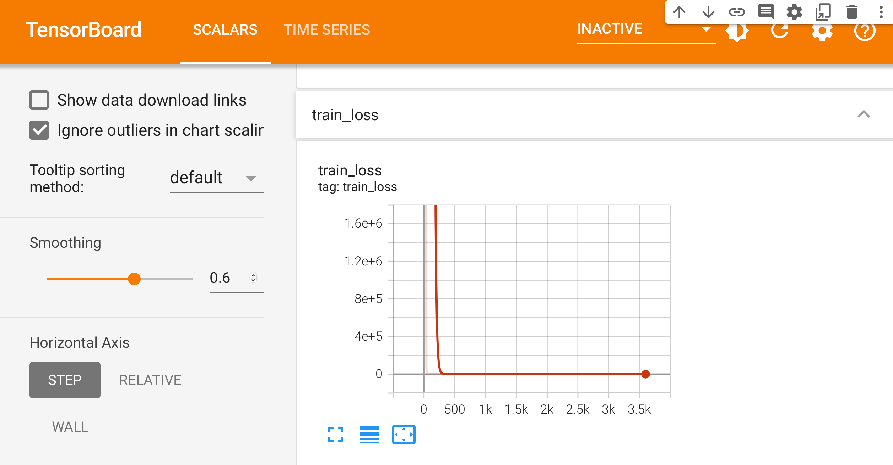

深層学習による回帰モデル(PyTorch Lightning版)#
多層パーセプトロンは、４層以上の局所最適解や勾配消失などの技術的な問題によって、 十分に学習させられず、性能も芳しくなく、1990年代は機械学習のメインストリームから外れていました。
深層学習は、2006年に、ジェフリー・ヒントンらがオートエンコーダを提案し、 多層でも十分に学習できるように改善したニューラルネットワークです。
Nature誌に掲載されたDeep Learning の発明者らの論文
https://www.cs.toronto.edu/~hinton/absps/NatureDeepReview.pdf


今回は、まず、おじみのボストン住宅価格データセットを使って、 深層学習による回帰モデルを作ってみます。
import numpy as np
import pandas as pd
import matplotlib.pyplot as plt
import seaborn as sns
try:
import japanize_matplotlib #matplotlibの日本語化
except ModuleNotFoundError:
import os
os.system('pip3 install japanize_matplotlib')
import japanize_matplotlib
sns.set(font="IPAexGothic") #日本語フォント設定
!pip install -q git+https://github.com/kkuramitsu/kogi.git
import kogi
!wget https://kkuramitsu.github.io/lec/data/boston.csv
df = pd.read_csv('boston.csv')
df.drop('黒人', axis=1, inplace=True) # 黒人を除去する
df.head()

PyTorch と PyTorch Lightning#
PyTorch#
PyTorchはDeep Learningを実行する時に用いられる代表的なフレームワークです。 自由度が高く、個々人で自由な記述が可能です。 これはメリットでもありますが、可読性が非常に低くなるリスクがあります。 また、学習時のモデルや結果の保存など、サイエンスの側面とは異なるコード書くタイミングが多く、 コーディングに多くの時間を取られます。したがって、PyTorchで機械学習を行うなら、 データサイエンティストにはサイエンスの能力とコーディングの２つの能力が求められます。
PyTorch Lightning#
PyTorch Lightningは"データサイエンティストはサイエンスに力を捧ぐべきで、 コーディングは最小限の労力で"をコンセプトに作成された、 PyTorch のラッパーです。PyTorch Lightningは後述するように、 コードの書き方に指定があり、サイエンスに関わる部分(モデルのアーキテクチャ、学習方法、前処理の方法など)をメインに書きます。 このコードの書き方の適度な矯正はチーム間での可読性を上げる効果もあります！
また、GPU、TPUでの学習や、モデルと結果の保存など複雑なコーディンに関わる部分は数行書き足すだけで、実行することができるようになっています。
PyTorchによる回帰モデル#
説明変数と目的変数#
まず、ボストン住宅価格データセットの問題を少し思い出しておきます。 ボストン住宅価格は、犯罪率や部屋数などのデータ列から住宅価格（中央値）を予測するモデルを作ります。
ここでは、価格以外のデータ列を全て説明変数にする場合を考えます。
テンソルに変換する#
PyTorchでは、テンソル(Tensor) と呼ばれる数理データ構造を用います。
データフレーム（Numpy配列）からテンソルにデータ形式を変換します。
X = torch.tensor(X.values, dtype=torch.float32)
y = torch.tensor(y.values, dtype=torch.float32)
回帰と分類
分類はカテゴリを予測し、回帰は数値（連続値）を予測します。 クラス分類問題のときは、0から始まる整数(torch.int64)にします。
tensor([[6.3200e-03, 1.8000e+01, 2.3100e+00, ..., 2.9600e+02, 1.5300e+01,
4.9800e+00],
[2.7310e-02, 0.0000e+00, 7.0700e+00, ..., 2.4200e+02, 1.7800e+01,
9.1400e+00],
[2.7290e-02, 0.0000e+00, 7.0700e+00, ..., 2.4200e+02, 1.7800e+01,
4.0300e+00],
...,
[6.0760e-02, 0.0000e+00, 1.1930e+01, ..., 2.7300e+02, 2.1000e+01,
5.6400e+00],
[1.0959e-01, 0.0000e+00, 1.1930e+01, ..., 2.7300e+02, 2.1000e+01,
6.4800e+00],
[4.7410e-02, 0.0000e+00, 1.1930e+01, ..., 2.7300e+02, 2.1000e+01,
7.8800e+00]])
テンソルの次元も確認しておきましょう。
テンソルの次元は重要
自分のデータを学習するとき、次元の情報は重要になります。 常に確認する習慣を身につけましょう。
データセット(DataSet)#
PyTorch では、データセットと呼ばれるクラスで学習に使用するデータを扱います。 テンソルからデータセットを作るには、次のようにします。
 (ディープラーニングの基礎（PyTorch）より)
(ディープラーニングの基礎（PyTorch）より)
このようにデータセットにしておけば、 インデックスの操作で順番に目的変数と説明変数のデータ（ペア）が取り出せるようになります。
(tensor([6.3200e-03, 1.8000e+01, 2.3100e+00, 0.0000e+00, 5.3800e-01, 6.5750e+00,
6.5200e+01, 4.0900e+00, 1.0000e+00, 2.9600e+02, 1.5300e+01, 4.9800e+00]),
tensor(24.))
訓練、検証、テストデータに分割#
ホールドアウト法を使うため、学習用とテスト用にデータセットを分割します。
深層学習では、モデルを検証しながら学習するため、 学習用データセット、検証用データセット、テスト用データセットの３つに分割することが多いです。
ここでは、データ件数から比率70%:15%:15%になるように分割します。
n_train = (len(dataset) * 7) // 10
n_val = ((len(dataset) * 3) // 10) // 2
n_test = len(dataset) - (n_train + n_val)
torch.manual_seed(0)
# データセットの分割
train, val, test = torch.utils.data.random_split(dataset, [n_train, n_val, n_test])
(n_train, n_val, n_test)
これで学習に入るデータセットの準備はできました。
ミニバッチ学習#
通常、深層学習モデルで学習するときは、データ1件ごとに最適化するのではなく、 いくつかのデータをまとめて入力し、それぞれの勾配を計算し、パラメータの更新を行います。 （まとめられたいくつかのデータのことをバッチと呼びます。）
PyTorch では DataLoaderが提供されており、
データセットからバッチサイズによる分割を行ってくれます。
 (ディープラーニングの基礎（PyTorch）より)
(ディープラーニングの基礎（PyTorch）より)
from torch.utils.data import DataLoader
# バッチサイズ
batch_size = 10
train_loader = DataLoader(train, batch_size, shuffle=True)
val_loader = DataLoader(val, batch_size)
test_loader = DataLoader(test, batch_size)
shuffle=True
固定化された訓練データを用いると局所解に陥いる危険が高まります。 訓練データは、ミニバッチを構成するデータごとにシャッフルするようにしています。 このようにシャッフルすることで、過学習になることを防ぐ ことができます。
ニューラルネットワークモデルを構築する#
続いて、ニューラルネットワークモデルを定義していきます。
入力層と全結合層からなる2層のモデルのイメージを掴みましょう。
 (ディープラーニングの基礎（PyTorch）より)
(ディープラーニングの基礎（PyTorch）より)
PyTorch を使って、上図のモデルをコード化すると、nn.Linearで作れます。
ただし、このままでは１層しかないので、単純パーセプトロン（線形回帰）になります。
今回は、説明変数が 12 であり、予測したい数値が 1 であるため、 例えば、全結合層 fc1 と fc2 のノードの数を以下のように決めます。
ネットワークの接続は、 （順伝播の）計算の流れとして定義します。 例えば、「線形変換 (fc1) => 非線形変換 (ReLU) => 線形変換 (fc2) 」の場合は、 次のようになります。
PyTorch Lightning によるモデル定義#
いよいよ、ニューラルネットネットワークを定義します。
今回は、Pytorch Lightning を使うので、
LightningModuleクラスを継承するようにします。
import pytorch_lightning as pl
class Net(pl.LightningModule):
def __init__(self, input_size=12, hidden_size=5, output_size=1, batch_size=10):
super(Net, self).__init__()
self.fc1 = nn.Linear(input_size, hidden_size)
self.fc2 = nn.Linear(hidden_size, output_size)
self.batch_size = batch_size
def forward(self, x):
x = self.fc1(x)
x = F.relu(x)
x = self.fc2(x)
return x
__init__メソッド(コンストラクタ)でネットワークモデルを、forward メソッドの内部に順伝播の計算を定義します。
メソッド名
PyTorch Lightning のメソッドは、Trainer から呼び出されます。 そのため、名前は変更しないようにしましょう。
それでは、ネットワークモデルが定義されたことを確認しておきましょう。
Net(
(fc1): Linear(in_features=12, out_features=5, bias=True)
(fc2): Linear(in_features=5, out_features=1, bias=True)
)
Netクラス
Netクラスは、まだ完成ではありません。さらに必要なメソッドをNetクラスに追加していきます。
目的関数(損失関数)#
目的関数は、損失関数とも呼ばれ、モデルによる予測値と目的値（正解）の誤差を計算する関数になります。
回帰モデルでは、平均ニ乗誤差（MSE：Mean Squared Error）を採用することが多いです。 （つまり、MSEを小さくすることを目的にします。）
平均二乗誤差
目的関数は、lossfunメソッドとして定義します。
PyTorchが提供してくれる関数( F.mse_loss)を呼び出すようにしましょう。
最適化手法#
モデルの学習にあたり使用する最適化手法を決める必要があります。
PyTorch では、torch.optim 内に様々な最適化手法が用意されており、 標準的な__確率的勾配降下法 (SGD)__ を使ってみます。
SGD (
Parameter Group 0
dampening: 0
lr: 0.1
maximize: False
momentum: 0
nesterov: False
weight_decay: 0
)
最適化は、モデルのパラメータを調整するため、
モデルのパラメータを渡す必要があります。
パラメータの取得には model.parameters() を用います。
もう１つの引数として学習係数 (lr: learning rate) も与えます。
Parameter containing:
tensor([[-0.0969, -0.2677, 0.1183, 0.2810, -0.0822, -0.2390, -0.2618, 0.0723,
-0.0219, -0.1458, 0.0584, 0.1096],
[ 0.2296, 0.2241, -0.0432, -0.2545, -0.2609, 0.2695, 0.1276, 0.1258,
-0.2498, 0.2673, 0.2735, 0.2606],
[-0.2435, -0.1089, -0.1985, 0.2734, -0.1240, -0.1318, 0.1512, -0.1335,
-0.1422, -0.0253, -0.0277, -0.2249],
[ 0.2407, -0.1273, 0.1024, 0.2511, 0.1456, 0.0409, 0.2456, 0.0388,
-0.1336, 0.2731, 0.0683, -0.2817],
[-0.0822, -0.1966, 0.2531, -0.0477, -0.2631, -0.0181, 0.1813, 0.0750,
0.0913, 0.0268, 0.1076, -0.0703]], requires_grad=True)
Parameter containing:
tensor([-0.1148, -0.2698, -0.2175, 0.1251, -0.1709], requires_grad=True)
Parameter containing:
tensor([[ 0.0642, 0.1427, 0.0317, -0.2900, 0.4277]], requires_grad=True)
Parameter containing:
tensor([-0.2601], requires_grad=True)
さて、ここまでのまとめたクラスは次の通りになります。
class Net(pl.LightningModule):
def __init__(self, input_size=12, hidden_size=5, output_size=1, batch_size=10):
super(Net, self).__init__()
self.fc1 = nn.Linear(input_size, hidden_size)
self.fc2 = nn.Linear(hidden_size, output_size)
self.batch_size = batch_size
def forward(self, x):
x = self.fc1(x)
x = F.relu(x)
x = self.fc2(x)
return x
def lossfun(self, y, t):
return F.mse_loss(y, t) # 平均ニ乗誤差
def configure_optimizers(self):
# self になるので注意
return torch.optim.SGD(self.parameters(), lr=0.1)
学習手順#
学習を実行する前に、深層学習モデルを学習する手順を把握しておきましょう。 深層学習では、基本的に次の手順の繰り返しながら学習していきます。
- ミニバッチ単位でデータセットを準備する
- 現在のパラメータを用いて、順伝搬で予測値を計算する
- 目的関数を用いて、正解と予測値の誤差を計算する
- 誤差逆伝搬法に基づいて、各パラメータの勾配を計算する
- 最適化手法によって、勾配からパラメータを更新する

もしPyTorch Lightning などのフレームワークを使わなければ、 全ての学習手順を自分でプログラミングすることになります。
ありし日の訓練スクリプト
PyTorch Lightning を使わなければこのような感じでした。
running_loss = 0.0
for epoch in range(num_epochs):
#Shuffle just mixes up the dataset between epocs
X_train, y_train = shuffle(X_train, y_train)
# Mini batch learning
for i in range(batch_no):
start = i * batch_size
end = start + batch_size
inputs = Variable(torch.FloatTensor(X_train[start:end]))
labels = Variable(torch.FloatTensor(y_train[start:end]))
# zero the parameter gradients
optimizer.zero_grad()
# forward + backward + optimize
outputs = net(inputs)
#print("outputs",outputs)
#print("outputs",outputs,outputs.shape,"labels",labels, labels.shape)
loss = criterion(outputs, torch.unsqueeze(labels,dim=1))
loss.backward() # 自動微分で勾配を計算
optimizer.step() # パラメータの更新
# print statistics
running_loss += loss.item()
print('Epoch {}'.format(epoch+1), "loss: ",running_loss)
running_loss = 0.0
深層学習における学習手順は、扱うデータが何であってもほとんど同じです。 そこで、PyTorch Lightning は共通部分のプログラムを提供し、 ユーザがカスタマイズすべきところに注目できるようにしてくれています。
ここでは、ミニバッチの学習に必要なステップのみ注目して以下のメソッドを追加します。
training_step: 学習ループのミニバッチが与えられたときに、どの様に計算するのか記述するvalidation_step: 検証ループのミニバッチが与えられたときに、どの様に計算するのか記述するvalidation_end:test_step: テストループのミニバッチが与えられたときに、どの様に計算するのか記述するtest_end:
import pytorch_lightning as pl
import torch.nn as nn
import torch.nn.functional as F
from torch.utils.data import DataLoader
class Net(pl.LightningModule):
def __init__(self, input_size=12, hidden_size=16, output_size=1, batch_size=10):
super(Net, self).__init__()
self.bn = nn.BatchNorm1d(input_size)
self.fc1 = nn.Linear(input_size, hidden_size)
self.fc2 = nn.Linear(hidden_size, output_size)
self.batch_size = batch_size
def forward(self, x):
x = self.bn(x)
x = self.fc1(x)
x = F.relu(x)
x = self.fc2(x)
return x
def lossfun(self, y, t):
return F.mse_loss(y, t) # 平均ニ乗誤差
def configure_optimizers(self):
return torch.optim.SGD(self.parameters(), lr=0.0005)
# データローダの追加
def train_dataloader(self):
return DataLoader(train, self.batch_size, shuffle=True)
def val_dataloader(self):
return DataLoader(val, self.batch_size)
def test_dataloader(self):
return DataLoader(test, self.batch_size)
## 訓練の手続きを定義する
def training_step(self, batch, batch_nb):
x, t = batch
y = self.forward(x)
loss = self.lossfun(y, torch.unsqueeze(t,dim=1)) #次元を揃える
self.log('train_loss', loss)
return {'loss': loss}
def training_epoch_end(self, outputs):
avg_loss = torch.stack([x['loss'] for x in outputs]).mean()
# Logging to TensorBoard by default
self.log('train_loss', avg_loss, prog_bar=True)
def validation_step(self, batch, batch_nb):
x, t = batch
y = self.forward(x)
loss = self.lossfun(y, torch.unsqueeze(t,dim=1)) #次元を揃える
self.log('val_loss', loss)
return {'val_loss': loss}
def validation_epoch_end(self, outputs):
avg_loss = torch.stack([x['val_loss'] for x in outputs]).mean()
self.log('val_loss', avg_loss, prog_bar=True)
PyTorch Lightning による学習#
いよいよ、PyTorch Lightning による学習を行っていきます。
GPU available: False, used: False
TPU available: False, using: 0 TPU cores
IPU available: False, using: 0 IPUs
HPU available: False, using: 0 HPUs
Trainer のハイパーパラメータの中で、主なものを紹介しておきます。
| 引数名 | デフォルトの値 | 説明 |
|---|---|---|
| show_progress_bar | True | 学習時の進捗を標準出力 |
| max_epochs | 1000 | 学習時の最大エポック数 |
| early_stop_callback | False | 早期終了の使用の有無 |
| gpus | None | 使用するGPUの数 |
GPU
深層学習では Graphics Processing Unit (GPU) を用いた演算の高速化を行うことが一般的です。 GPUを使う場合は、学習時にデータとモデルの両方を GPU のメモリ上に転送する必要があります。 PyTorch Lightning は、その辺りの処理を全部、自動的に行ってくれます。
Colab と GPU
Colab では、無料で手軽に GPU を用いた演算を試すことができます。
あとは、SciKit-Learn と同様に トレーナーのfit()メソッドにデータローダを渡すことで、 学習することができます。
train_loader = DataLoader(train, model.batch_size, shuffle=True)
val_loader = DataLoader(val, model.batch_size)
trainer.fit(model, train_loader, val_loader)
| Name | Type | Params
--------------------------------
0 | fc1 | Linear | 65
1 | fc2 | Linear | 6
--------------------------------
71 Trainable params
0 Non-trainable params
71 Total params
0.000 Total estimated model params size (MB)
Epoch 999: 100% 42/42 [00:00<00:00, 169.55it/s, loss=95.2, v_num=1]
dataloaderの統合
train_dataloader val_dataloader test_dataloaderのメソッドも定義すると、
データローダも統合されます。
TensorBoard#
PyTorch Lightning のログ出力は、TensorBoardに対応しています。 学習の進捗は、次のとおり、TensorBoardによって確認できます。
テストデータ#
重回帰モデル（LinearRegression)による予測精度は、 （訓練データとテストデータの比率が異なりますが）、次の通りでした。 比較してみましょう。
データセットから決定係数R2を算出する関数を用意しておきます。
from sklearn.metrics import r2_score
def score_r2(model, dataset):
model.eval()
y = []
y_pred = []
for i in range(len(dataset)):
result = model(dataset[i][0].view(1,-1))
y.append(float(dataset[i][1]))
y_pred.append(float(result[0][0]))
r2=r2_score(y_pred, y)
return r2
どんな結果になるかはお楽しみです。
print('訓練データ(R2) ', score_r2(model, train))
print('検証データ(R2)', score_r2(model, val))
print('テストデータ(R2)', score_r2(model, test))
練習問題#
- 学習率を変えて、精度を比較してみよう
- Epoch数を変えて、精度を比較してみよう。
- ネットワークの構造を深くしてみて、精度を比較してみよう。
- バッチサイズと学習率の関係を調べてみよう